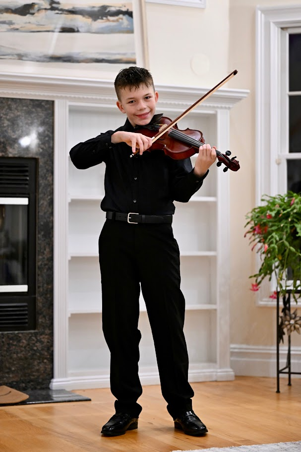
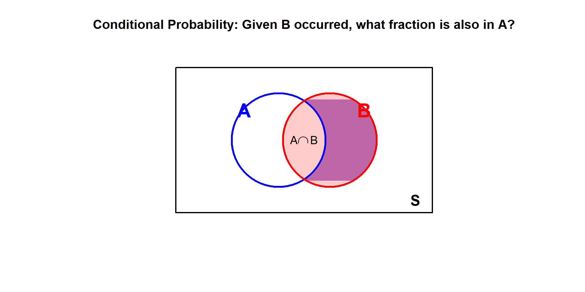
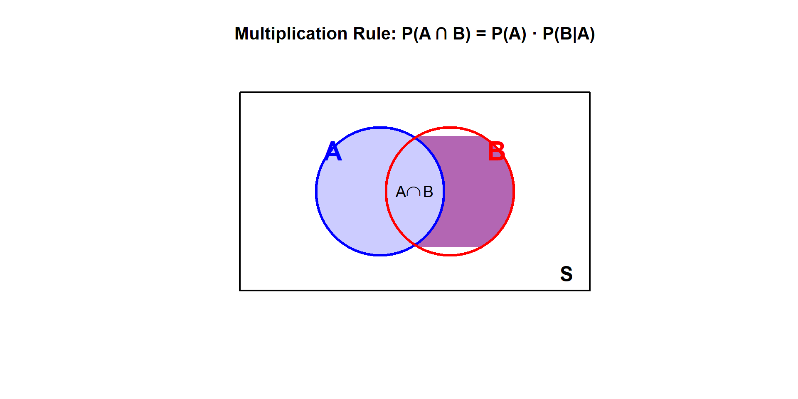
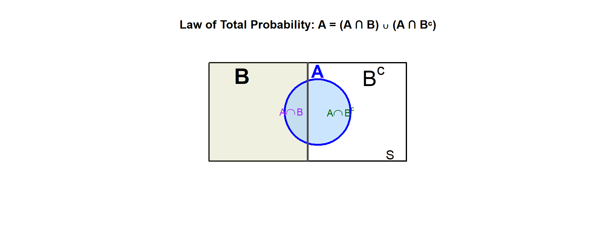

Lesson 7: Conditional Probability

What We Did: Lesson 6
Quick Review: Probability Basics
NoteKey Concepts from Lesson 6
Sample Spaces and Events:
- Sample space \(S\) = set of all possible outcomes
- Event = subset of the sample space
- Operations: Union (\(A \cup B\)), Intersection (\(A \cap B\)), Complement (\(A^c\))
Kolmogorov Axioms:
- \(P(A) \geq 0\)
- \(P(S) = 1\)
- For mutually exclusive events: \(P(A \cup B) = P(A) + P(B)\)
Key Rules:
- Complement Rule: \(P(A^c) = 1 - P(A)\)
- Addition Rule: \(P(A \cup B) = P(A) + P(B) - P(A \cap B)\)
What We’re Doing: Lesson 7
Objectives
- Understand and compute conditional probability \(P(A|B)\)
- Apply the multiplication rule to find \(P(A \cap B)\)
- Use the Law of Total Probability to find \(P(A)\)
- Apply Bayes’ Theorem to “reverse” conditional probabilities
Required Reading
Devore, Section 2.4
Break!
Reese, Cal, and Snow
Cal

DMath Basketball!!
Math vs Garrison
NotePreviously 7-2
8-2
Class Exercise: Let’s Collect Some Data
Stand Up If…
Let’s build a table using our class!
Round 1: Stand up if you are a Corps Squad athlete. (Count and sit)
Round 2: Stand up if you are taller than 5’9”. (Count and sit)
Round 3: Stand up if you are both (athlete AND tall). (Count and sit)
| Athlete | Not Athlete | Total | |
|---|---|---|---|
| Tall (>5’9”) | |||
| Short (≤5’9”) | |||
| Total |
Two Different Questions
Using our data, answer these:
- Of the athletes, what fraction are tall?
\[\frac{\text{Tall AND Athlete}}{\text{Total Athletes}} = \text{?}\]
- Of the tall people, what fraction are athletes?
\[\frac{\text{Tall AND Athlete}}{\text{Total Tall}} = \text{?}\]
WarningKey Observation
These are different questions with different answers!
Same numerator, different denominators.
How do we write this mathematically? That’s what today’s lesson is about.
Conditional Probability
Formalization
Sometimes we have partial information about an outcome. How does knowing that one event occurred change the probability of another event?
Example: You draw a card from a deck.
- \(P(\text{King}) = \frac{4}{52} = \frac{1}{13}\)
But what if I tell you the card is a face card? Now:
- \(P(\text{King} \mid \text{face card}) = \frac{4}{12} = \frac{1}{3}\)
The probability changed because we conditioned on new information!
Definition of Conditional Probability
ImportantConditional Probability Formula
The conditional probability of \(A\) given \(B\) is:
\[P(A \mid B) = \frac{P(A \cap B)}{P(B)}, \quad \text{provided } P(B) > 0\]
Read “\(P(A \mid B)\)” as “the probability of \(A\) given \(B\).”
Intuition: We’re restricting our attention to only the outcomes where \(B\) occurred, then asking what fraction of those also have \(A\).

Revisiting the Card Example
Let’s apply the formula to our earlier example:
- \(A\) = card is a King
- \(B\) = card is a face card
Find each piece:
- \(P(A \cap B) = P(\text{King AND face card}) = \frac{4}{52}\) (all Kings are face cards)
- \(P(B) = P(\text{face card}) = \frac{12}{52}\)
Apply the formula:
\[P(A \mid B) = \frac{P(A \cap B)}{P(B)} = \frac{4/52}{12/52} = \frac{4}{12} = \frac{1}{3}\]
This matches our intuition: of the 12 face cards, 4 are Kings.
The Multiplication Rule
Deriving the Multiplication Rule
Rearranging the conditional probability formula:
\[P(A \mid B) = \frac{P(A \cap B)}{P(B)} \implies P(A \cap B) = P(B) \cdot P(A \mid B)\]
ImportantMultiplication Rule
\[P(A \cap B) = P(A) \cdot P(B \mid A) = P(B) \cdot P(A \mid B)\]
The probability of \(A\) and \(B\) equals the probability of one event times the conditional probability of the other.

Reading the diagram:
- First, find \(P(A)\) — the blue circle
- Then, \(P(B \mid A)\) asks: “of those in A, what fraction are also in B?”
- Multiplying gives \(P(A \cap B)\) — the purple intersection
Example: Cards Continued
Draw one card from a deck. What is the probability it is red AND a face card?
Let:
- \(A\) = card is red
- \(B\) = card is a face card
Using the multiplication rule:
\[P(A \cap B) = P(A) \cdot P(B \mid A)\]
- \(P(A) = \frac{26}{52} = \frac{1}{2}\) (26 red cards)
- \(P(B \mid A) = \frac{6}{26}\) (of the 26 red cards, 6 are face cards: J, Q, K of hearts and diamonds)
\[P(\text{red AND face card}) = \frac{1}{2} \times \frac{6}{26} = \frac{6}{52} = \frac{3}{26} \approx 0.115\]
Check: There are 6 red face cards out of 52 total cards, so \(P = \frac{6}{52}\) ✓
Law of Total Probability
Partitioning the Sample Space
Sometimes we want to find \(P(A)\), but it’s easier to compute \(P(A)\) by breaking it into cases based on another event \(B\).
ImportantLaw of Total Probability
If \(B\) and \(B^c\) partition the sample space (one must occur), then:
\[P(A) = P(A \cap B) + P(A \cap B^c)\]
Using the multiplication rule:
\[P(A) = P(B) \cdot P(A \mid B) + P(B^c) \cdot P(A \mid B^c)\]

Example: Two Boxes of Cards
You have two boxes of cards:
- Box 1: 10 cards — 4 are face cards, 6 are not
- Box 2: 10 cards — 2 are face cards, 8 are not
You pick Box 1 with probability 0.70 and Box 2 with probability 0.30, then draw a card. What is P(face card)?
Let \(A\) = draw a face card, \(B\) = chose Box 1 (so \(B^c\) = chose Box 2)
- \(P(B) = 0.70\), \(P(B^c) = 0.30\)
- \(P(A \mid B) = \frac{4}{10} = 0.40\), \(P(A \mid B^c) = \frac{2}{10} = 0.20\)
\[P(A) = P(B) \cdot P(A \mid B) + P(B^c) \cdot P(A \mid B^c)\] \[= 0.70 \times 0.40 + 0.30 \times 0.20\] \[= 0.28 + 0.06 = 0.34\]
34% of draws will be face cards.
General Form
For any partition \(B_1, B_2, \ldots, B_n\) of the sample space:
\[P(A) = \sum_{i=1}^{n} P(B_i) \cdot P(A \mid B_i)\]
Bayes’ Theorem
Reversing Conditional Probability
We often know \(P(A \mid B)\) but want \(P(B \mid A)\). Bayes’ Theorem lets us “flip” the conditioning.
ImportantBayes’ Theorem
\[P(B \mid A) = \frac{P(B) \cdot P(A \mid B)}{P(A)}\]
Or using the Law of Total Probability in the denominator:
\[P(B \mid A) = \frac{P(B) \cdot P(A \mid B)}{P(B) \cdot P(A \mid B) + P(B^c) \cdot P(A \mid B^c)}\]
Example: Which Box?
Using our two boxes example: if you drew a face card, what’s the probability it came from Box 1?
We have \(P(A \mid B)\) (probability of face card given Box 1), but we want \(P(B \mid A)\) (probability it was Box 1 given we drew a face card).
We know (using \(A\) = face card, \(B\) = Box 1):
- \(P(B) = 0.70\), \(P(B^c) = 0.30\)
- \(P(A \mid B) = 0.40\), \(P(A \mid B^c) = 0.20\)
- \(P(A) = 0.34\) (calculated earlier using Law of Total Probability)
Find \(P(B \mid A)\):
\[P(B \mid A) = \frac{P(B) \cdot P(A \mid B)}{P(B) \cdot P(A \mid B) + P(B^c) \cdot P(A \mid B^c)}\]
\[= \frac{0.70 \times 0.40}{0.70 \times 0.40 + 0.30 \times 0.20} = \frac{0.28}{0.28 + 0.06} = \frac{0.28}{0.34} \approx 0.824\]
About 82.4% of face cards came from Box 1. This is higher than 70% because Box 1 also has a higher proportion of face cards.
TipKey Insight
Bayes’ Theorem lets us “reverse” the conditional probability. We started knowing \(P(\text{face card} \mid \text{Box 1})\) and found \(P(\text{Box 1} \mid \text{face card})\).
Board Problems
Problem 1
A survey of 200 soldiers found:
- 140 have completed Airborne school
- 80 have completed Air Assault school
- 50 have completed both
A soldier is selected at random.
NoteQuestions
- What is \(P(\text{Airborne})\)?
- What is \(P(\text{Air Assault} \mid \text{Airborne})\)?
- What is \(P(\text{Airborne} \mid \text{Air Assault})\)?
- What is \(P(\text{Airborne AND Air Assault})\)?
TipAnswers
\(P(\text{Airborne}) = \frac{140}{200} = 0.70\)
\(P(\text{Air Assault} \mid \text{Airborne}) = \frac{P(\text{Both})}{P(\text{Airborne})} = \frac{50/200}{140/200} = \frac{50}{140} = \frac{5}{14} \approx 0.357\)
\(P(\text{Airborne} \mid \text{Air Assault}) = \frac{P(\text{Both})}{P(\text{Air Assault})} = \frac{50/200}{80/200} = \frac{50}{80} = \frac{5}{8} = 0.625\)
\(P(\text{Airborne AND Air Assault}) = \frac{50}{200} = 0.25\)
Problem 2
In a class of 30 cadets:
- 18 are in Engineering
- 12 take Statistics
- 6 are in Engineering AND take Statistics
NoteQuestions
- What is \(P(\text{Statistics} \mid \text{Engineering})\)?
- What is \(P(\text{Engineering} \mid \text{Statistics})\)?
- What is \(P(\text{Engineering AND Statistics})\)?
TipAnswers
Let \(E\) = Engineering, \(S\) = Statistics
\[P(S \mid E) = \frac{P(S \cap E)}{P(E)} = \frac{6/30}{18/30} = \frac{6}{18} = \frac{1}{3}\]
\[P(E \mid S) = \frac{P(E \cap S)}{P(S)} = \frac{6/30}{12/30} = \frac{6}{12} = \frac{1}{2}\]
\[P(E \cap S) = \frac{6}{30} = \frac{1}{5} = 0.20\]
Problem 3
A disease affects 2% of the population. A diagnostic test has:
- Sensitivity: \(P(\text{positive} \mid \text{disease}) = 0.95\)
- False positive rate: \(P(\text{positive} \mid \text{no disease}) = 0.08\)
NoteQuestions
- What is \(P(\text{disease AND positive test})\)?
- What is \(P(\text{no disease AND positive test})\)?
- What is the overall probability of testing positive?
TipAnswers
Using the multiplication rule: \[P(D \cap +) = P(D) \cdot P(+ \mid D) = 0.02 \times 0.95 = 0.019\]
Using the multiplication rule: \[P(D^c \cap +) = P(D^c) \cdot P(+ \mid D^c) = 0.98 \times 0.08 = 0.0784\]
A positive test can happen with or without disease: \[P(+) = P(D \cap +) + P(D^c \cap +) = 0.019 + 0.0784 = 0.0974\]
About 9.74% of people will test positive.
Problem 4
At a checkpoint, 5% of vehicles are selected for inspection. Of the vehicles inspected, 2% are found to have violations. Of the vehicles not inspected, 0.1% have violations that go undetected.
NoteQuestions
- What is the probability a randomly selected vehicle is inspected AND has a violation?
- What is the probability a vehicle has a violation (detected or not)?
TipAnswers
Let \(I\) = inspected, \(V\) = has violation
Using the multiplication rule: \[P(I \cap V) = P(I) \cdot P(V \mid I) = 0.05 \times 0.02 = 0.001\]
Using the law of total probability (a vehicle either is or isn’t inspected): \[P(V) = P(I \cap V) + P(I^c \cap V)\] \[= P(I) \cdot P(V \mid I) + P(I^c) \cdot P(V \mid I^c)\] \[= 0.05 \times 0.02 + 0.95 \times 0.001\] \[= 0.001 + 0.00095 = 0.00195\]
About 0.195% of vehicles have violations.
Problem 5
A lock has a 4-digit code where each digit is 0-9. Assume all codes are equally likely.
NoteQuestions
- How many possible codes are there?
- If you guess randomly, what’s the probability of guessing correctly on the first try?
- If you can try 3 times, what’s the probability of guessing correctly at least once?
TipAnswers
Each digit has 10 choices: \[10 \times 10 \times 10 \times 10 = 10^4 = 10,000 \text{ codes}\]
\[P(\text{correct on first try}) = \frac{1}{10000}\]
Using the complement (assuming you don’t repeat guesses): \[P(\text{at least one correct in 3 tries}) = 1 - P(\text{all 3 wrong})\]
If guessing without replacement from the 10,000 codes: \[P(\text{all wrong}) = \frac{9999}{10000} \cdot \frac{9998}{9999} \cdot \frac{9997}{9998} = \frac{9997}{10000}\]
\[P(\text{at least one correct}) = 1 - \frac{9997}{10000} = \frac{3}{10000} = 0.0003\]
Problem 6: Bae’s Theorem
You go on a date with Taylor Swift. Based on historical data:
- 30% of her dates go well
- 50% of her dates are meh
- 20% of her dates go badly
The probability Taylor writes a song about the date depends on how it went:
- \(P(\text{song} \mid \text{well}) = 0.10\) (happy, less drama)
- \(P(\text{song} \mid \text{meh}) = 0.30\) (some material)
- \(P(\text{song} \mid \text{badly}) = 0.90\) (maximum inspiration)
NoteQuestions
- What is the probability Taylor writes a song about your date?
- If Taylor wrote a song about your date, what’s the probability it went badly?
TipAnswers
Let \(S\) = song written, \(W\) = went well, \(M\) = meh, \(B\) = went badly
a) Use Law of Total Probability:
\[P(S) = P(W) \cdot P(S \mid W) + P(M) \cdot P(S \mid M) + P(B) \cdot P(S \mid B)\] \[= 0.30 \times 0.10 + 0.50 \times 0.30 + 0.20 \times 0.90\] \[= 0.03 + 0.15 + 0.18 = 0.36\]
There’s a 36% chance she writes a song about your date.
b) Use Bayes’ Theorem:
\[P(B \mid S) = \frac{P(B) \cdot P(S \mid B)}{P(S)} = \frac{0.20 \times 0.90}{0.36} = \frac{0.18}{0.36} = 0.50\]
If Taylor wrote a song about you, there’s a 50% chance the date went badly!
Even though only 20% of dates go badly, bad dates are so much more likely to become songs that they account for half of all songs written.
Summary
Key Takeaways
ImportantCore Concepts
Conditional Probability: \[P(A \mid B) = \frac{P(A \cap B)}{P(B)}\]
Multiplication Rule: \[P(A \cap B) = P(A) \cdot P(B \mid A) = P(B) \cdot P(A \mid B)\]
Law of Total Probability: \[P(A) = P(B) \cdot P(A \mid B) + P(B^c) \cdot P(A \mid B^c)\]
Bayes’ Theorem: \[P(B \mid A) = \frac{P(B) \cdot P(A \mid B)}{P(A)}\]
Before You Leave
Today
- Conditional probability: \(P(A \mid B) = \frac{P(A \cap B)}{P(B)}\)
- The multiplication rule for \(P(A \cap B)\)
- Law of Total Probability
- Bayes’ Theorem: flipping conditional probabilities
Any questions?
Next Lesson
Lesson 8: Counting & Independence
- Counting techniques (permutations, combinations)
- Independence of events
- Multiplication rule for independent events
Upcoming Graded Events
- WebAssign 2.4 - Due before Lesson 8
- Exploratory Data Analysis - Due Lesson 9
- WPR I - Lesson 16